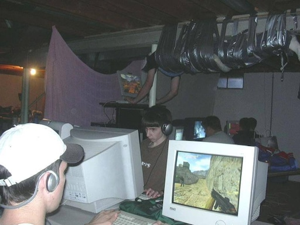
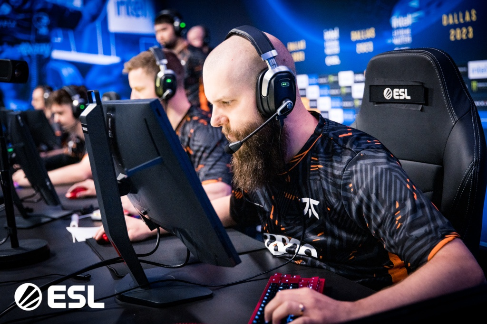
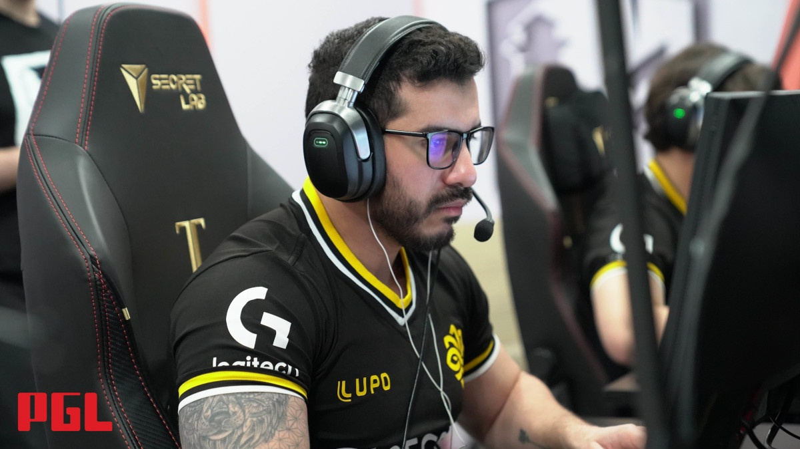
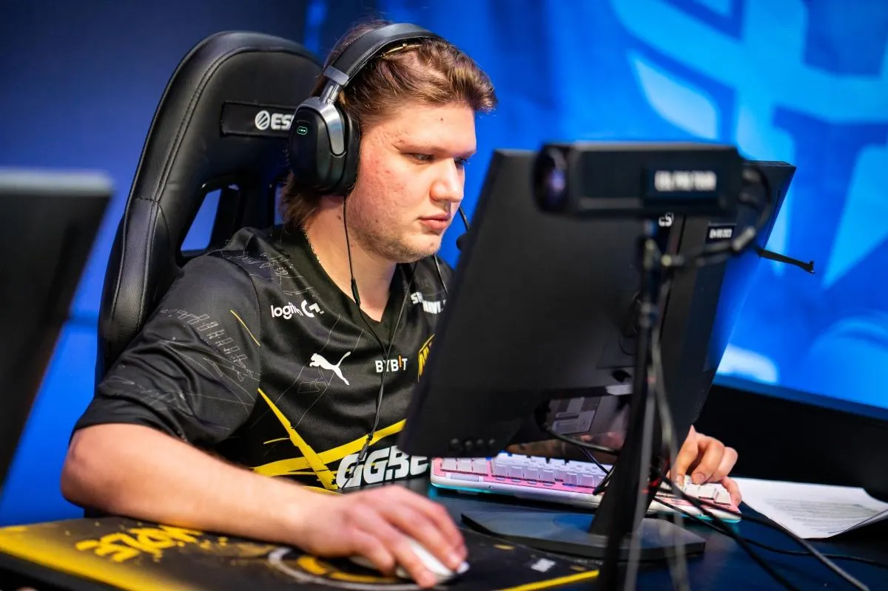
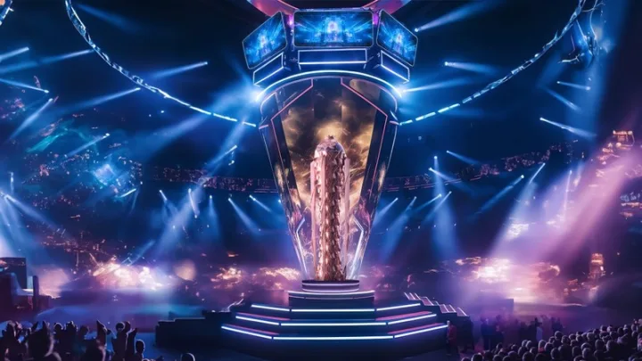

The Beginnings
Counter-Strike's journey into esports began in the early 2000s, with grassroots tournaments organized by passionate communities. These local events were fueled by dedication and pure love for the game, attracting players from around the world to compete in LAN parties and small-scale competitions. Over time, organizations like CPL (Cyberathlete Professional League) and WCG (World Cyber Games) recognized Counter-Strike's potential as a competitive platform, hosting more structured and larger-scale tournaments.
This era laid the groundwork for professional gaming, with innovative strategies and iconic moments defining the competitive scene. Counter-Strike became more than just a game; it transformed into a cultural phenomenon that bridged players across different regions, setting the stage for modern esports to flourish.
Legendary Players
f0rest: A cornerstone of Counter-Strike history, f0rest has dazzled fans with his consistency and raw skill since the 1.6 days. Known for his versatile playstyle, he adapted seamlessly to different iterations of the game, always staying relevant in the competitive scene. His longevity and commitment to excellence serve as an inspiration to many aspiring players, solidifying his status as a true legend of Counter-Strike.
Beyond his technical prowess, f0rest is also celebrated for his charismatic personality and sportsmanship. From his early days with Ninjas in Pyjamas to his continued presence in the scene, he has been a pillar of the Counter-Strike community, embodying the spirit of competitive gaming.
coldzera: Known for his clutch plays and highlight moments, coldzera rose to prominence during the CS:GO era, winning multiple major MVP awards. His iconic 4k with the AWP on Mirage against Team Liquid remains one of the most celebrated moments in Counter-Strike history. Coldzera's ability to thrive under pressure and deliver in critical situations made him a key player for teams like Luminosity Gaming and SK Gaming.
As a tactical genius and consistent performer, coldzera redefined what it means to be a star player. His dedication and hard work inspired many players to emulate his calculated and methodical approach to the game.
s1mple: Widely regarded as one of the greatest of all time, s1mple's incredible aim and versatility continue to redefine excellence in CS2 esports. Whether it's clutching impossible rounds or delivering jaw-dropping plays, s1mple has consistently raised the bar for individual performance in competitive Counter-Strike.
His journey from a young prodigy to a seasoned champion is a testament to his resilience and passion for the game. Representing organizations like Natus Vincere, s1mple's dominance in the scene has earned him multiple awards, including Major MVP honors. Fans and analysts alike often refer to him as the benchmark for greatness in esports.
The Current Scene
With the release of Counter-Strike 2, esports has reached new heights. International tournaments like the CS2 Majors attract millions of viewers, with prize pools exceeding millions of dollars. These events showcase world-class talent, advanced strategies, and the passion of both players and fans, cementing Counter-Strike's place as a premier esport.
The professional scene has evolved significantly, with players and teams now supported by dedicated coaching staff, analysts, and state-of-the-art facilities. Organizations invest heavily in player development and infrastructure, leading to a level of professionalism previously unseen in the industry. Counter-Strike 2 has also introduced new mechanics and visuals, enhancing the viewing experience for fans worldwide.
As the community grows, the spirit of Counter-Strike remains alive through grassroots tournaments, fan engagement, and the shared love for the game. The future of Counter-Strike esports is brighter than ever, with its legacy continuing to inspire a new generation of players and fans.